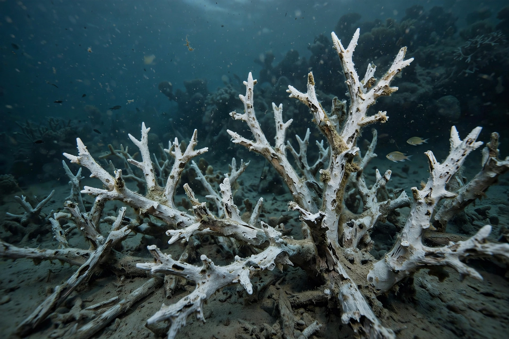
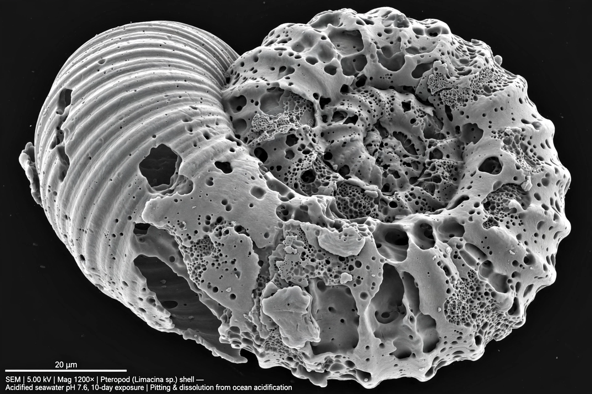

Ocean acidification


Ocean acidification is the ongoing decrease in the pH of Earth's oceans caused by their uptake of carbon dioxide from the atmosphere. It is sometimes called 'the other CO₂ problem', alongside Global warming, because both stem from the same emissions.
Seawater is slightly alkaline; as it absorbs CO₂ it forms carbonic acid and the concentration of hydrogen ions rises, while carbonate ions — needed by many organisms to build shells and skeletons — become scarcer.
Chemistry and measurements
Since the pre-industrial era the average surface ocean pH has fallen by roughly 0.1 units, corresponding to an increase in acidity of about 30 per cent, because the pH scale is logarithmic. Long time-series stations such as those off Hawaii and Bermuda confirm the trend is tracking atmospheric CO₂.
The key chemical concern is the saturation state of calcium carbonate minerals (aragonite and calcite). In cold high-latitude waters and in upwelling zones, surface waters are approaching conditions corrosive to aragonite shells.
Impacts on marine life
Calcifying organisms — including reef-building corals, oysters, mussels, sea urchins and many plankton — must spend more energy to build and maintain shells, and larvae are especially vulnerable. Hatchery failures of oyster larvae in the Pacific Northwest of the United States in the 2000s were linked to upwelled acidic water.
Acidification compounds other stressors: warming drives Coral bleaching, and together with deoxygenation it forms a trio of CO₂-driven pressures on marine ecosystems. Effects higher up food webs, including on fisheries, are an active research area.
Outlook
If emissions continue at high rates, surface pH could fall by a further 0.3–0.4 units by 2100. Past acidification events in the geological record, such as the Paleocene–Eocene Thermal Maximum, were associated with major extinctions of marine species, although they unfolded more slowly than the current change. Mitigation follows the same route as for Climate change: reducing carbon dioxide emissions.
See also: Climate change · Carbon cycle · Coral bleaching · Ocean · Greenhouse gas